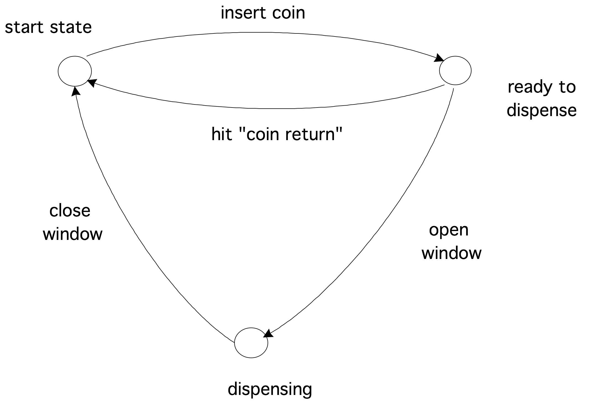

Automata
There is an extensive theory of automata; here we will only touch on the basic concepts. Let us start with a simple example.
crumb trail: > fsa > Finite State Automata
A FSA is a very simple machine, something on the order of a vending machine that will dispense a candy bar when a quarter has been inserted. There are four actions possible with a vending machine: insert a quarter, press `coin return' to ask for any inserted money back, open the window to take the candy bar, and close the window again. Whether an action is possible (especially the third) depends on the state the machine is in. There are three states: the begin state, the state where the quarter has been inserted and the window unlocked (let us call this `ready to dispense'), and the state where the window is open (which we will call `dispensing').
In certain states, certain actions are not possible. For instance, in the beginning state the window can not be opened.
The mathematical description of this vending machine consists of 1.~the list of states, 2.~a table of how the possible actions make the machine go from one state to another. However, rather than writing down the table, a graphical representation is usually more insightful.
FIGURE 20.1: A simple real-life automaton
crumb trail: > fsa > General discussion
From the vending machine example, you saw an important characteristic of an automaton: it allows certain actions, but only in some circumstances, and in the end it has a state corresponding to `success', which is only reached if certain sequences of actions are taken.
The formal description of this process is as follows: we call the individual actions an `alphabet', and a sequence of actions a `word' from based on that alphabet. The `success' result of a machine then corresponds to a verdict that a certain word belong to the `language' that is accepted by the automaton. Thus there is a correspondence between automata theory and language theory.
Consider the alpha $\{a,b\}$, that is, the alphabet with only the letters $a,b$, and consider the language $\{a^mb^n\colon m,n>0\}$, that is the words that consist of one or more $a$s followed by one or more~$b$s. Draw the automaton that accepts this language.What makes the FSA the simplest type is that it has no memory. Most vending machines do not complain if you put in more than one quarter: they have no memory beyond `a~quarter has been inserted'. A more complicated machine would count how many quarters you inserted, and then allow you to open that many windows to different candy bars. In the above formal way of describing, that machine would accept the language $\{q^nw^n\colon n\geq 0\}$, that is, the sequences where you deposit as many quarters (`$q$') as you open windows~(`$w$'). This language is an example of a so-called context-free language ; the language of the original vending machine is a regular language .
These two language types belong to the four level hierarchy} of languages. The famous Turing machine , which recognizes the recursively enumerable language type, is on the top level of the hierarchy. The missing step has the context-sensitive language type, which is recognized by a linear bounded automaton .